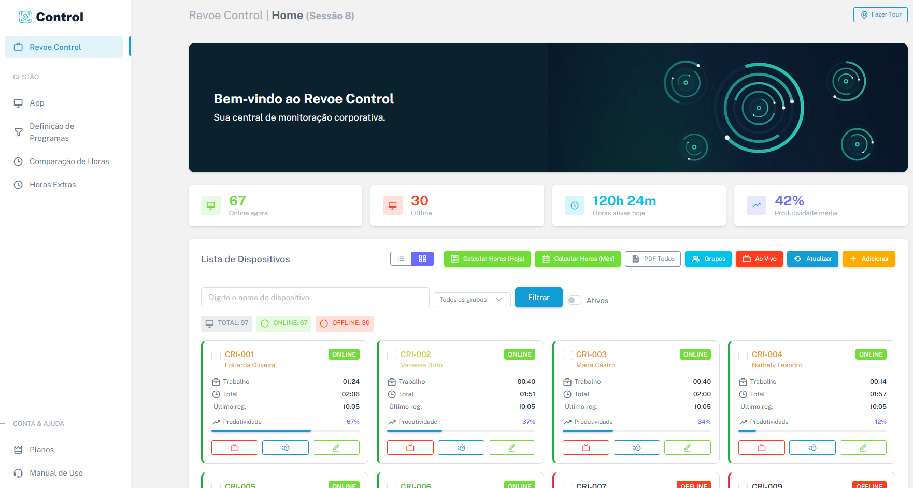
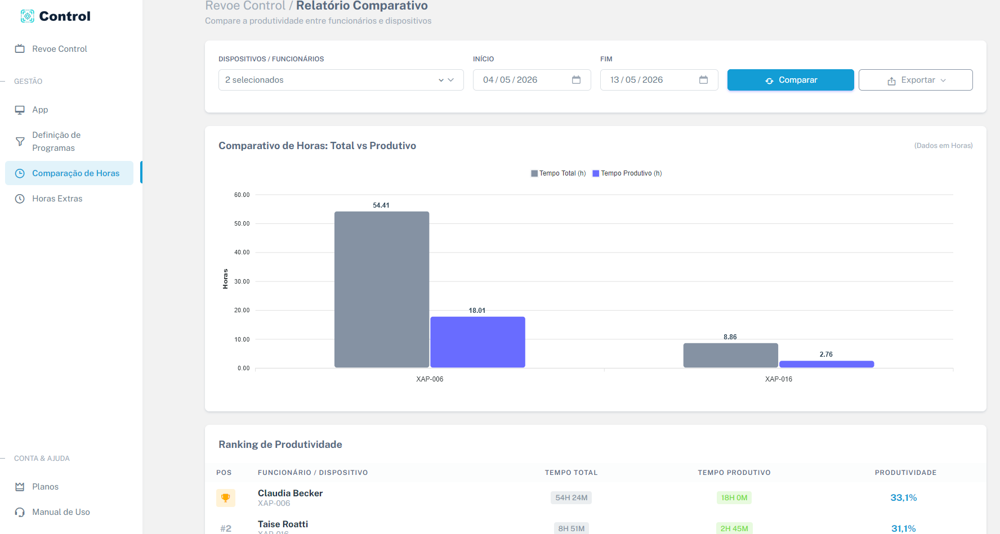
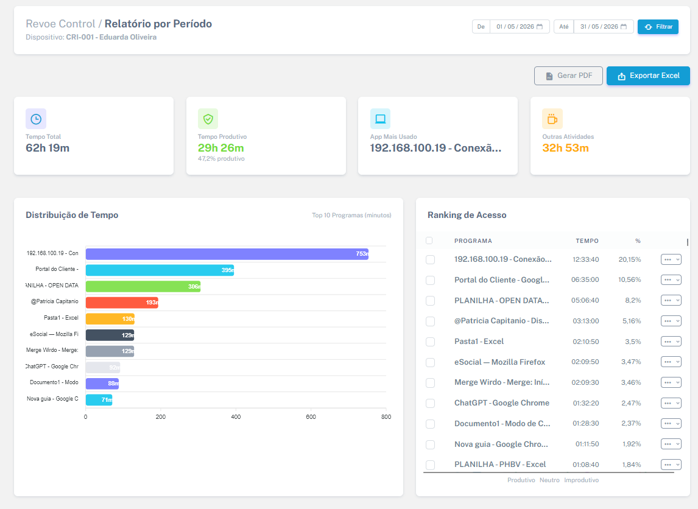
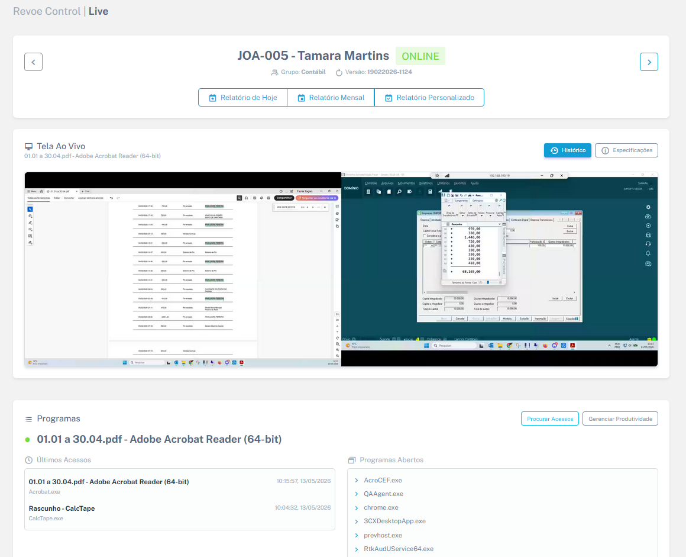

O Revoe Control é uma plataforma completa de monitoramento que transforma as atividades da sua equipe no computador em gráficos precisos, métricas de metas e relatórios detalhados.




Identifique gargalos operacionais e perda de tempo antes que virem prejuízo. Tenha total visibilidade sobre o que está acontecendo na sua empresa.
Saiba exatamente o que a sua equipe está fazendo agora, acessando de qualquer computador ou celular, em tempo real.
Baseie feedbacks, avaliações de desempenho e decisões em informações reais (Métricas de Uso e Histórico de Screenshots).
Identifique seus melhores talentos comparando os níveis de produtividade entre os colaboradores da sua operação.
O Revoe Control foi desenvolvido para não interferir na rotina do funcionário.
Um pequeno programa é instalado silenciosamente no Windows do colaborador, trabalhando em segundo plano.
O sistema registra a janela ativa, programas em execução, o uso de mouse/teclado e captura telas automaticamente.
Acesse o portal na nuvem pelo seu navegador e tenha um Dashboard centralizado sendo atualizado em tempo real.
Monitoramento ao vivo, histórico de métricas e cálculo automático de produtividade.
Assista à tela dos computadores ao vivo. Acompanhe a atividade de todos os colaboradores simultaneamente em um só painel interativo.
O sistema categoriza automaticamente as horas registradas entre atividades úteis e distrações. Acompanhe os indicadores visualmente.
O sistema tira prints periodicamente e os organiza em uma galeria interativa para fácil auditoria e conferência.
Separação automática de horas trabalhadas, horas improdutivas e vazias, gerando métricas exatas de performance.
Organize as jornadas de trabalho separando por departamentos, como Financeiro, DP, Comercial e TI.
Emita e exporte relatórios de produtividade em PDF ou Excel de dezenas de funcionários simultaneamente.
Controle rigoroso de horas extras sem depender de ponto manual. Saiba exatamente o primeiro e o último registro do dia.
Solução focada em monitoramento, otimização de tempo e segurança das operações.
O Agente de monitoramento é perfeitamente compatível com computadores rodando Windows 10 e Windows 11, atendendo a grande maioria dos ambientes corporativos.
Não. O Agente do Revoe Control foi otimizado para consumir o mínimo de processamento e memória, garantindo que o colaborador trabalhe normalmente sem travamentos.
Sim. O painel permite agrupar os colaboradores por setores, como Comercial, Financeiro ou Suporte, facilitando o acompanhamento de metas e o comparativo de performance de cada área.
O sistema classifica o uso baseando-se na janela e no programa ativo. Você define categorias, e ele calcula automaticamente as horas produtivas (ex: Excel, ERP), horas improdutivas (ex: Redes Sociais) e até mesmo detecta o tempo ocioso (sem interação de mouse/teclado).
Com certeza. Você pode emitir relatórios diários ou mensais de produtividade e controle de jornada (horas extras) e exportar de dezenas de funcionários de uma só vez, em lotes (ZIP) com arquivos em PDF ou Excel.
Não. Você cadastra sua empresa, baixa o agente e testa por 7 dias com todas as funcionalidades liberadas. Só assina se a ferramenta realmente fizer sentido para sua operação.
Cadastre-se e faça um teste gratuito de 7 dias (Sem necessidade de cartão de crédito). Ou converse com a gente no WhatsApp para alinhar o plano ideal.
7 dias grátis · sem cartão · cancele quando quiser